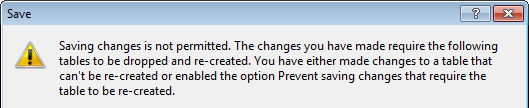
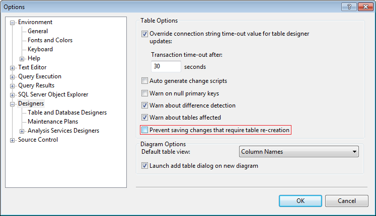
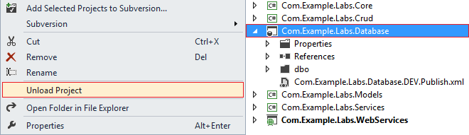
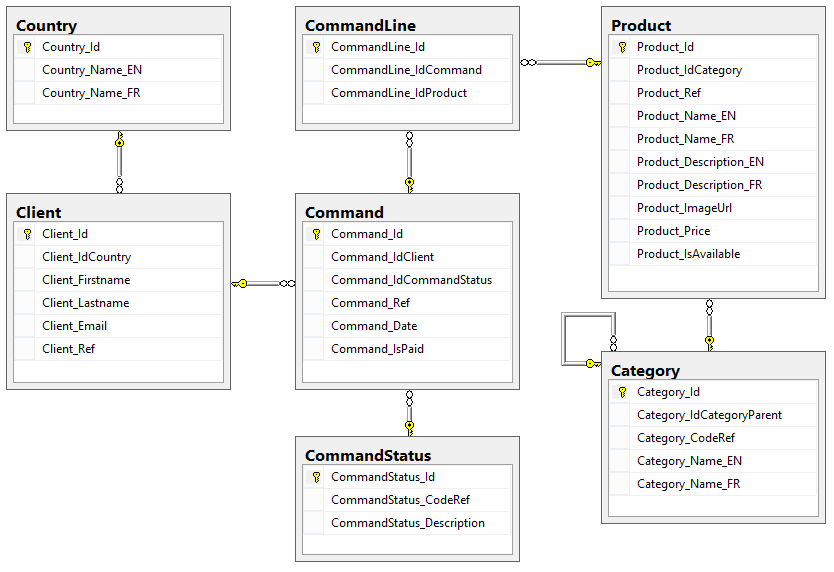
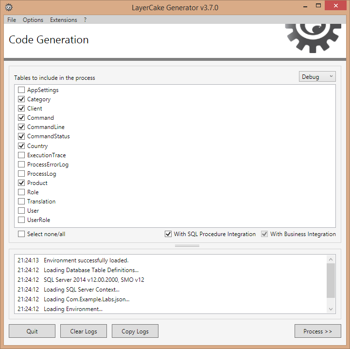
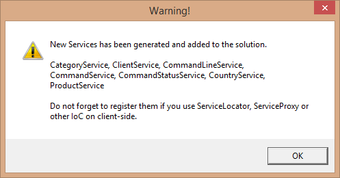
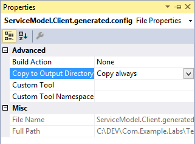
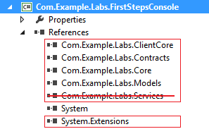

Duration: ~30mins
Launch SQL Server Management Studio
To avoid the following message when working on the database's structure...
Go to Tools -> Options -> Designers node and uncheck the Prevent saving changes that require table re-creation option.
In this part we assume that you are comfortable with relational data models and Database Project.
Database Project - From MSDN
You can use database projects to create new databases, new data-tier applications (DACs), and to update existing databases and data-tier applications. Both database projects and DAC projects enable you to apply version control and project management techniques to your database development efforts in much the same way that you apply those techniques to managed or native code. You can help your development team manage changes to databases and database servers by creating a DAC project, database project, or a server project and putting it under version control. Members of your team can then check out files to make, build, and test changes in an isolated development environment, or sandbox, before sharing them with the team. To help ensure code quality, your team can finish and test all changes for a particular release of the database in a staging environment before you deploy the changes into production.
To avoid synchronization errors in the labs (out-of scope) unload the Database Project from the solution.
In this lab we are going to work with the following schema.
ALTER TABLE [Category] ADD CONSTRAINT [UQ_Category_CodeRef] UNIQUE ([Category_CodeRef])
ALTER TABLE [CommandStatus] ADD CONSTRAINT [UQ_CommandStatus_CodeRef] UNIQUE ([CommandStatus_CodeRef])
Let's update the database's structure!
Get the SQL script here and execute it on the Labs database to update the schema.
Run LayerCake Generator and select the configuration file.
Check the new/modified tables only and press the Process button to start the process.
Once done LayerCake Generator warns that new services have been created.
In this part we are going to create a Console Application and write simple code without using WCF layer (this point will be see later).
First add a Console Application project to the solution. Name it Com.Example.Labs.FirstStepsConsole.
Then add the following Solution>Projects references
Find your Default the connection string from the Tests\Com.Example.Labs.Tests\App.config file and add it in the App.config file (because we won't use WCF layer).
Example
<?xml version="1.0" encoding="utf-8" ?> <configuration> <startup> <supportedRuntime version="v4.0" sku=".NETFramework,Version=v4.5" /> </startup> <connectionStrings> <add name="Default" connectionString="Data Source=localhost;Initial Catalog=Labs;Integrated Security=SSPI;" /> </connectionStrings> </configuration>
Finally copy and paste the following code in the Program.cs file.
namespace Com.Example.Labs.FirstStepsConsole { using Com.Example.Labs.ClientCore; using Com.Example.Labs.Contracts; using Com.Example.Labs.Core; using Com.Example.Labs.Models; using Com.Example.Labs.Services; using System; using System.Collections.Generic; using System.Linq; class Program { // All service calls require a IUserContext context (this point will be see later). private static IUserContext userContext = ClientContext.Anonymous; static void Main(string[] args) { // 1. // ----------------------------------------------------- // Create and store some countries in database foreach (var countryName in new List<string> { "England", "France", "Spain" }) { Country country = new Country(); country.Name.EN = string.Format("EN_{0}_{1}", countryName, RandomHelper.GetNumber(10000, 99999)); country.Name.FR = string.Format("FR_{0}_{1}", countryName, RandomHelper.GetNumber(10000, 99999)); // NOTE: When a property is modified, the State property is automatically updated. // Here country.State == ToInsert using (var service = new ServiceProxy<ICountryService>()) { service.Proxy.Save(userContext, ref country); } } // 2. // ----------------------------------------------------- // Retrieve all countries where [Name_EN LIKE 'England'] var options = new SearchOptions(); options.Filters.Add(Country.ColumnNames.Name_EN, FilterOperator.Like, "England"); using (var service = new ServiceProxy<ICountryService>()) { TCollection<Country> countries = service.Proxy.Search(userContext, ref options); } // 3. // ----------------------------------------------------- // Retrieve all countries where [Name_EN LIKE 'England'] OR [Name_FR LIKE 'France'] options.Clear(); options.Filters.Add(0, Country.ColumnNames.Name_EN, FilterOperator.Like, "England"); options.Filters.Add(1, Country.ColumnNames.Name_FR, FilterOperator.Like, "France"); using (var service = new ServiceProxy<ICountryService>()) { TCollection<Country> countries = service.Proxy.Search(userContext, ref options); } // 4. // ----------------------------------------------------- // Retrieve all countries and remove them from database options.Clear(); // no filter using (var service = new ServiceProxy<ICountryService>()) { foreach (var country in service.Proxy.Search(userContext, ref options) /* no filter -> all records are returned */) { service.Proxy.Delete(userContext, country.Id); } } // 5. // ----------------------------------------------------- Client aClient = new Client { Lastname = "Doe" }; using (var clientService = new ServiceProxy<IClientService>()) using (var countryService = new ServiceProxy<ICountryService>()) { try { clientService.Proxy.Save(userContext, ref aClient); // here aClient is not valid because some mandatory fields are not set -> throw EntityValidationException exception } catch (EntityValidationException x) { Console.WriteLine("Cannot save the client in database!"); Console.WriteLine(" Some mandatory fields are not set:"); foreach (var error in x.Translations) { Console.WriteLine(" -> {0}", TranslationResolver.Current.GetMessage(error)); // NOTE: TranslationResolver is used to translate TranslationEnums to string according the current culture. // Translations are located in the Translation table. } } aClient.Firstname = "John"; aClient.Email = "jdoe@nowhere.org"; aClient.Ref = 1234; Country aCountry = new Country(); aCountry.Name.EN = string.Format("EN_USA_{0}", RandomHelper.GetNumber(10000, 99999)); aCountry.Name.FR = string.Format("FR_USA_{0}", RandomHelper.GetNumber(10000, 99999)); aClient.Country = aCountry; // NOTE: aCountry will be automatically inserted in the database IList<TranslationEnum> validationErrors; if (aClient.IsValid(out validationErrors)) // check whether the aClient entity is valid { if (aClient.Country.IsValid(out validationErrors)) // check whether the aClient.Country entity is valid { clientService.Proxy.Save(userContext, ref aClient, new SaveOptions { SaveChildren = true /* NOTE: perform Save() recursively (-> Country then Client) */ }); clientService.Proxy.LoadCountry(userContext, ref aClient); // load into aClient.Country property the associated Country instance aClient.Email = "john.doe@skynet.net"; // NOTE: now aClient.State == ToUpdate clientService.Proxy.Save(userContext, ref aClient); // update data // Clear database clientService.Proxy.Delete(userContext, aClient.Id); countryService.Proxy.Delete(userContext, aClient.Country.Id); } } } Console.ReadLine(); } } }
Run the program and use breakpoints to analyze the code at runtime.
It's so simple :)
In order to use advanced features (Cache, Logger, Smtp, Tracers...) and WCF (when invoking service.Proxy.Method()) we have to edit the App.config.
Important files
Open the Tests\Com.Example.Labs.Tests\App.config file and copy its content in the Console Application configuration file.
Remove all connectionStrings sections (normally, 2) from the Console Application configuration file.
To set-up WCF support, create a Config folder in the Console Application project and create links (Add > Existing Items...) to the following files
For each linked file, set Copy to Output Directory = Copy always in the properties.
It means the endpoint is not accessible. The WebServices project (that host the WCF services) must be running (using IIS or IIS Express). Do not forget this point!
You can also use Multiple startup projects on the solution properties.
When modifying shared-code between Server and Clients (Core, Contracts, etc) do not forget to compile and run again the WebServices to reload updated assemblies into IIS/Cassini memory!
Remove the reference on the Com.Examples.Labs.Services assembly and the using Com.Example.Labs.Services namespace too.
Run again the Console Application.
Now the application uses WCF (Com.Example.Labs.WebServices) and the code implementation (Services, Business and Crud) is only known at server-side.